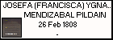
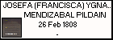
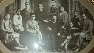

 
 

VICTORIANO OLANO GOIBURU
Born: 21 May 1875, IRURA
Married 21 Apr 1896, IRURA, to MAURICIA ESCOLASTICA JUARISTI TOLOSA
Reference: PARROQUIA S.MIGUEL (IRURA) 3º bAUTISMOS PARTIDA 6 DIOCESIS DE VITORIA

ARCHIVO HISTORICO DIOCESANO DE S.SEBSTIAN DEAH7F06.099//2428/003-01(f.96v,nº6/B,1875-05-21 MICROFILM M022-03
|
|